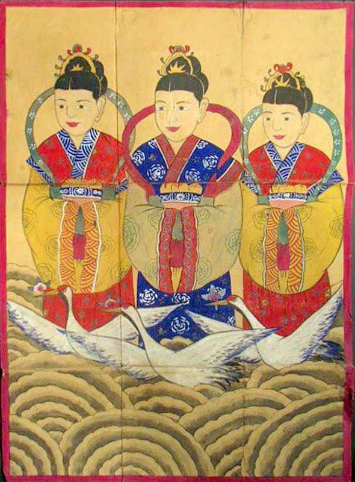

La "Abuela Samshin" es una figura importante en la mitología coreana y en la cultura popular de Corea. También conocida como "Samshin Halmoni" en coreano, se la considera la diosa de la fertilidad y el parto. Su nombre "Samshin" se deriva de las palabras coreanas "sam" que significa "tres" y "shin" que significa "espíritu" o "divinidad", lo que sugiere que está compuesta por tres espíritus.
Según la creencia popular, la Abuela Samshin es la protectora de las mujeres embarazadas y los niños pequeños. Se cree que vigila y cuida a las mujeres durante el embarazo, ayudándolas a tener un parto seguro y saludable. También se dice que vela por el bienestar de los niños, protegiéndolos de enfermedades y peligros.
En la cultura coreana, se realizan varios rituales y prácticas para honrar a la Abuela Samshin y solicitar su protección y bendiciones. Durante el embarazo, las mujeres suelen colocar una imagen de la Abuela Samshin en su habitación y realizar ofrendas de comida y oraciones para asegurar un parto seguro. Después del nacimiento, se llevan a cabo ceremonias de agradecimiento y celebración en honor a la Abuela Samshin, donde se le ofrecen diversos regalos y se le pide protección continua para el recién nacido.
La figura de la Abuela Samshin es profundamente venerada en la sociedad coreana y su influencia se extiende a través de generaciones. Su papel como protectora de la maternidad y la infancia la convierte en una figura querida y respetada en la cultura coreana, y su presencia sigue siendo relevante en la vida cotidiana de muchas personas en Corea hasta el día de hoy.